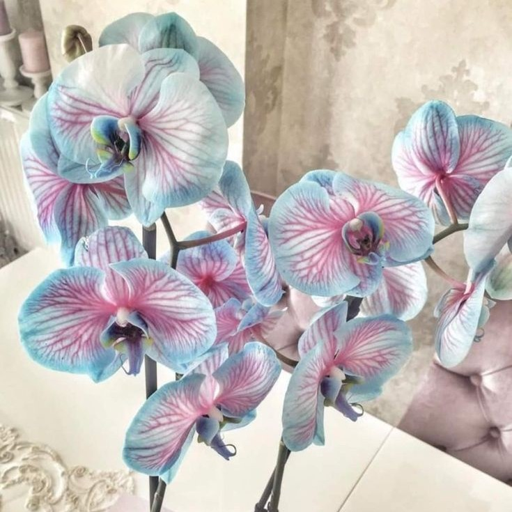
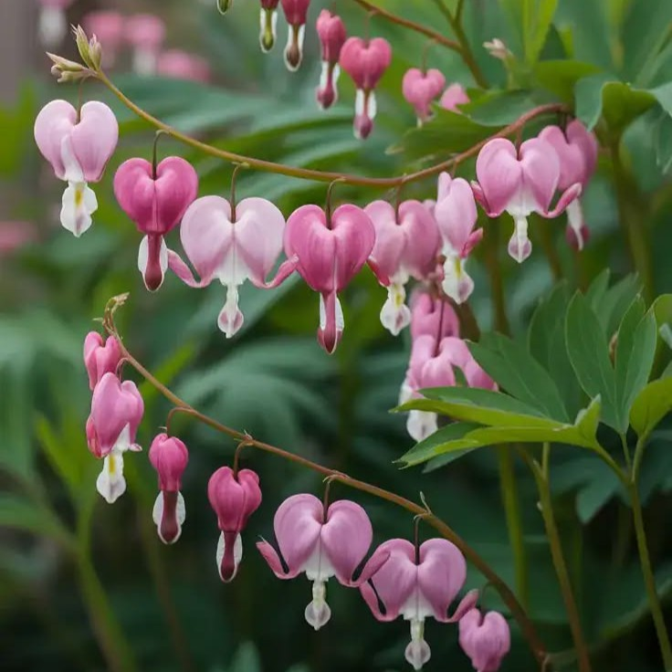
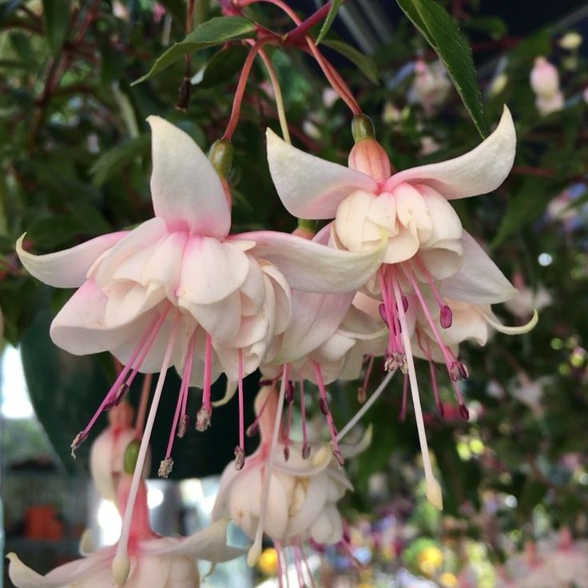
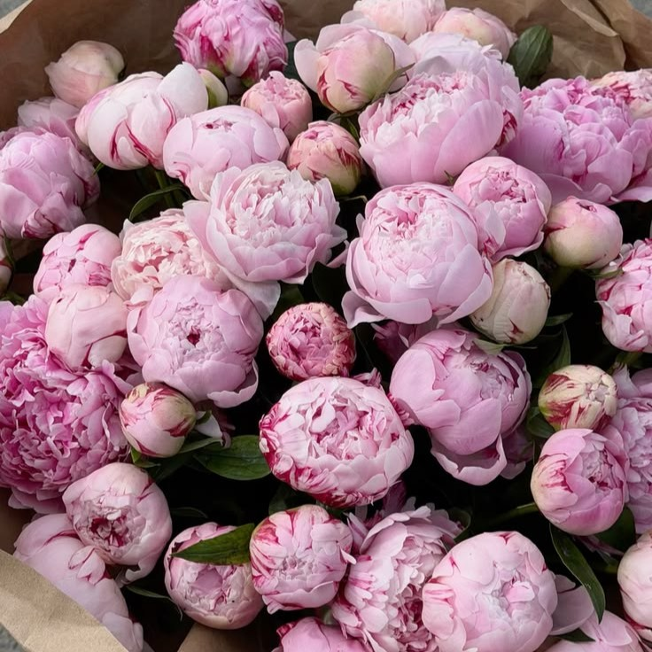
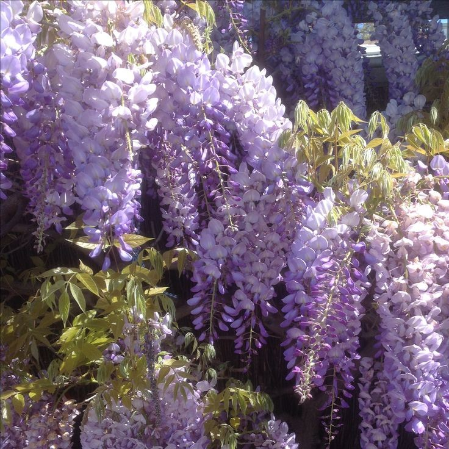

𐙚Canterbury Bells
Canterbury bells are charming, bell-shaped flowers that grow along tall stems in shades of pink, purple, blue, and white.
Meaning in flower language: Gratitude and acknowledgment.

𐙚Orchid
The orchid is an exotic flower admired for its graceful shape, intricate petals, and wide variety of colors.
Meaning in flower language: Exotic beauty, strength, and admiration.

𐙚Dicentra
Dicentra, commonly called bleeding heart, is known for its beautiful heart shaped flowers that hang from curved stems.
Meaning in flower language: Unconditional love and deep affection.

𐙚Fuchsia
Fuchsia is a delicate flower known for its brightly colored, hanging blossoms that resemble tiny dancing skirts.
Meaning in flower language: Confiding love and elegance.

𐙚Peonies
Peonies are lush, fragrant flowers known for their large, soft petals and full, rounded appearance.
Meaning in flower language: Prosperity, romance, and good fortune.

𐙚Wisteria
Wisteria is a climbing plant that produces long, cascading clusters of fragrant purple, pink, or white flowers.
Meaning in flower language: “I cling to thee,” representing devotion and lasting attachment.